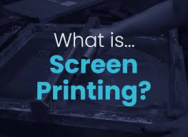
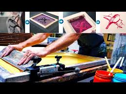

WELCOME TO ALL
Below is the screen printing process step by step:
Design Creation.
The first step in the process of screen printing is to create the design. ...
Selecting and Preparing the Screen. ...
Exposing the Emulsion. ...
Stencil Creation. ...
Preparation for Print. ...
Applying the Design. ...
Heat Curing & Finishing. ...
Spot Colour Screen Printing.
HOW TO START  
FINISHING OUT PUT